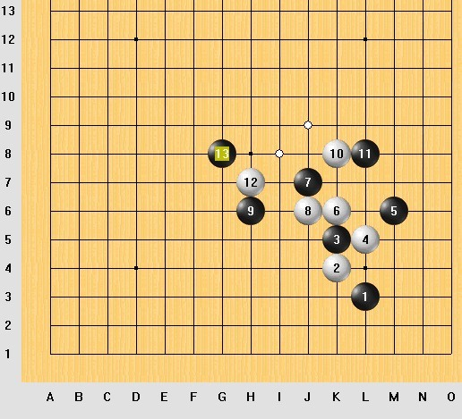
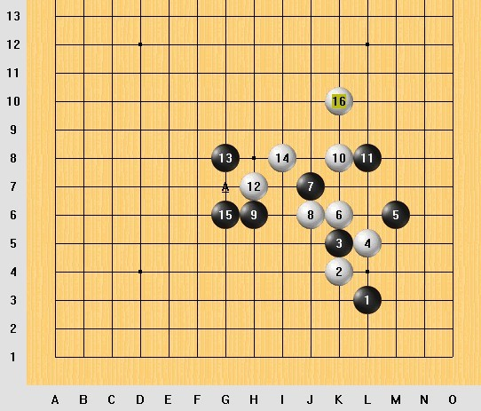
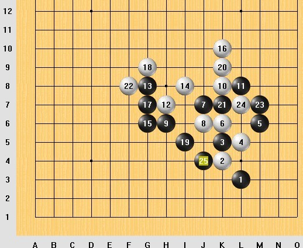
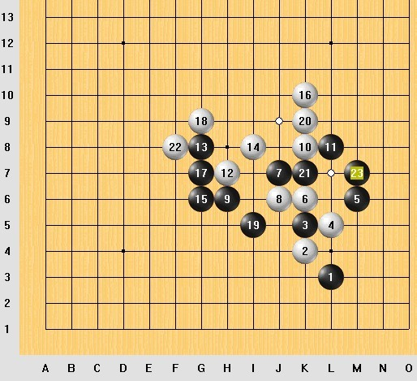
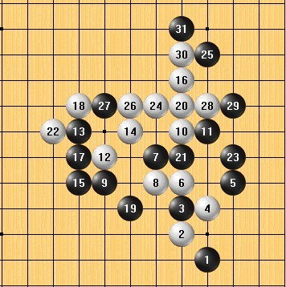
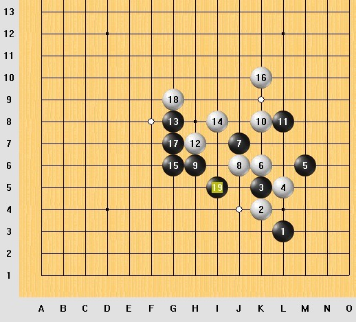

如何判断先手和找双杀点
#1 如何判断先手和找双杀点 作者：蓝天蓝 发表时间：2011-7-18 14:35:14
如何判断先手和找双杀点
分析很久以前的一盘棋

规则：一手交换规则
黑1 L3 ,白2 走K4这样贴身防守弱，这样虽说也防守了黑棋的一跳斜线，但是自己的发展空间也小，如果防守J5，同样也是防守黑棋的这条斜线，自己防守的空间相对来说也大了。后面一直到黑13，黑棋一直是八卦防守，这个时候白棋应该脱离黑棋八卦，白棋如果走J9，感觉比走I8要强一点，因为，白棋走I8给了黑棋进攻的机会，黑15一子双活二，同时防守白棋的活二，还是藏招，三级（藏招：对方如果不防守，接下来就可以二级连攻胜了）如图：

白16虽然形成了2个眠三，也是个藏招，同样也是三级
但是进攻级别跟黑15一样，同级别先手就很重要了，白16以后，黑走棋，就可以二级连攻胜了
下面是素功老师的分析
实战总谱

素功老师：22:09:00
来看这盘棋的最后一步
25是个冲四活三
25冲四活三之后
白棋必须要挡黑棋的冲四
而黑棋25 3 23 那个活三就能走成活四了
所以，从这个25开始，黑棋是能够连续冲四直到成五的

素功老师：22:12:11
黑19以后，白20冲四，这个冲出了黑棋活三的形成，有一步准备的棋
就是黑23
来看这个23
本身是个二级进
这个23是个二级进攻，活三
2级连攻胜
同时构成了刚才看到的25位的冲四活三
所以这步棋既是活三，又是示招
同时形成不同线路上的活三和示招，这个23就是“引示双”
引：活三的简称
示：示招的简称（示招：为冲四活三做准备的棋）
引示双，是“双二级进攻”
这时候，白棋是还有一级进攻的机会的
比如这样去冲四

连续走一级进攻的话，黑棋暂时还是没有继续进攻的机会的
但是
白棋这样的连续冲四并不能形成一级连攻胜，只是盲目的冲四，对白棋一点好处没有，反而给黑棋增加了更多的胜的方法
只要算清对方不能一级连攻胜，那么自己就可以去走“双二级进攻”的
如果对方能一级连攻胜，那自己的双二级进攻也是败招
在22之后
黑方通过计算，认为白棋并没有一级连攻胜，所以才决定走这个23的
这就可以说明“连攻胜的计算是做棋的基础
如果你不能确定白方有没有一级连攻胜的话，你就不敢贸然去走双二级进攻的
所以，替对方算算有没有杀，是个什么级别的杀，也是很重要的
如果黑23走出的比活三、示招更低级别的进攻的话
白棋是有杀的
只不过白棋的杀是个二级连攻胜而已

素功老师：22:23:10
再来看现在的局面
黑棋同样是判定白18之后是没有一级连攻胜的
才决定走这个19的
这个19活三，同样是二级
只要白棋没有一级连攻胜，那么白棋即使连走几步冲四，还是要回过头来防守的，对不对
这也就是黑方算清了白18的级别和黑19的级别，认为黑19的进攻级别虽然低于白方冲四的进攻级别，但是不低于白棋全盘的进攻级别
所谓全盘的进攻级别，就是连续做棋直到取胜的每一步棋的进攻级别中最低的那步棋的级别
白18，充其量可能做成二级连攻胜
有没有二级连攻胜还不一定
但黑棋只要判定白方没有一级连攻胜就足够了
这样，省去了很多无用的计算
那么，这个19有
#2 Re:双重进攻和级别比较 作者：与郎共五 发表时间：2011-7-18 16:52:59
感觉白2就不合棋理#3 Re:双重进攻和级别比较 作者：蓝天蓝 发表时间：2011-7-18 18:41:26
白2是有些不合棋理，网外防守一下最好了，那样也可以扩展自己的空间，一样可以防守黑棋的一条线#4 Re:Re:双重进攻和级别比较 作者：木石 发表时间：2011-8-8 15:31:18
蓝天姐，我看晕了#5 Re:如何判断先手和找双杀点 作者：自来水 发表时间：2011-8-8 17:30:12
是因为自造的名词一多，看起来就好像很复杂的关系吧
#6 Re:如何判断先手和找双杀点 作者：蓝天蓝 发表时间：2011-8-8 23:48:21
自造词 都有解释的